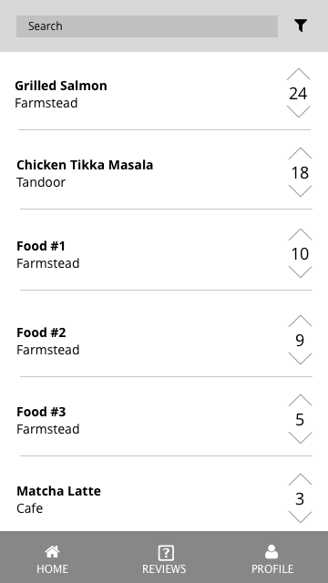
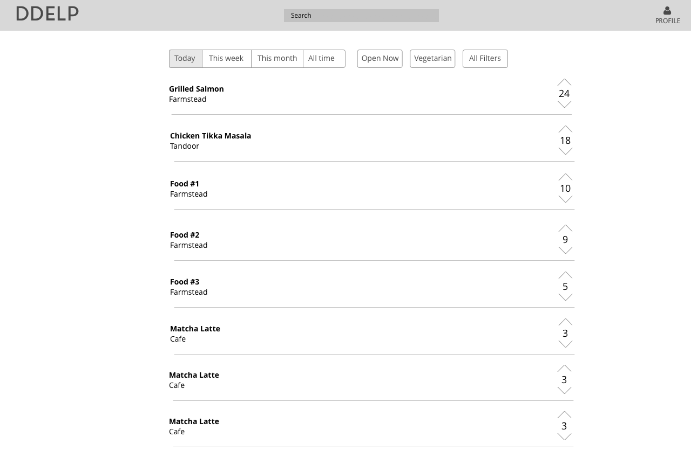

Carolyn Sun
Annie Yin
DDelp Final Project Plan
As specified in our Topic page, we are planning on creating a Duke Dining specific food rating site called DDelp, similar to Yelp. We want to build this app to give Duke students and visitors the opportunity to offer their opinions on the food at Duke eateries and view the most popular dishes and eateries quickly. Also, this app will be helpful for Duke students who are indecisive on what they want to eat or would like to try out new meal options on campus.
Our project will differentiate from Yelp in that, from a user experience perspective, it will require much less time and energy to “review” a dish or eatery. On Yelp, users must write a couple of sentences for a review and perhaps upload a photo. On DDelp, the average user simply has to upvote or downvote a dish or eatery to “review” it; this would be similar to Reddit. If a dish or eatery doesn’t exist yet, a user can contribute by inputting information, such as a picture or the price, and other users can upvote it.
Users can filter the reviews by time periods, such as “Today”, “Week”, “Month”, and “All Time”. A common use case might be going on the app and seeing what’s the most up-voted for the day, to decide what one might eat.
Our project will be very mobile-focused. People are using mobile more and more, and users would most likely check our website on their phones, when they are on the way to an eatery or already at an eatery (in these cases, they would not have their laptops with them). Although our website would be accessible on desktop, we’re predicting that mobile will be more popular. Thus, we will focus on making our website responsive and ideal for mobile.
Our main sources of data will be user inputted data (such as reviews and pictures), and Yelp’s API for existing reviews on Duke eateries currently on Yelp.
Features:
Homepage
- Top 5 dish recommendations for users at their top restaurants. Keep track of the top eateries that an user visits and recommending new dishes that are popular at those eateries
- Top 5 most upvoted dishes of the day
- Top 5 eateries of all time
Search Bar
- Search up a specific dish/eatery to view, edit, or vote. View a dish/eatery’s page, which includes up/down votes, comments, and other information. Guests and users can both vote, but only users can comment and add/edit information on the dish/eatery
- If not found, input information for a new dish/eatery. Only users are allowed to do this. Information: price, location, photo, time, dietary restrictions.
Reviews
- List of all dishes offered at Duke eateries
- Default filter: Dishes that have been voted on that day, ordered from most to least votes
- Possible filters - By time: “Today”, “Week”, “Month, “All Time”; By hours: “Open now”
- Clicking on a dish will display its page
User Profile/Login Page
- Profiles will include information about users, including total number of votes given, top 3 favorite dishes, etc.
- Change preferences on what the homepage should look like (recommendations based off of different criteria, etc.)
Mobile-focused / responsive
Stretch Goal:
Simplifying the user experience of inputting information for a new dish or eatery with autofill.
- For example: salmon is offered most Wednesdays. At 8 am next Wednesday, there will be no reviews for the “today” filter yet. Instead of having users manually input all the information for the “salmon” dish, we could autofill
Technologies
- Framework: Combination of either Vue or React with Node (please let us know which one might work better for this project - would React be better in this case since we want to focus on mobile UI as well as Desktop?)
- Database: Firebase
Data Input
- Main source of data will definitely be from user inputted
- Will potentially try to retrieve data from Yelp's API, but might not be feasible given that DDelp is a dish-centered app versus a restaurant-centered app
Mock-ups
 